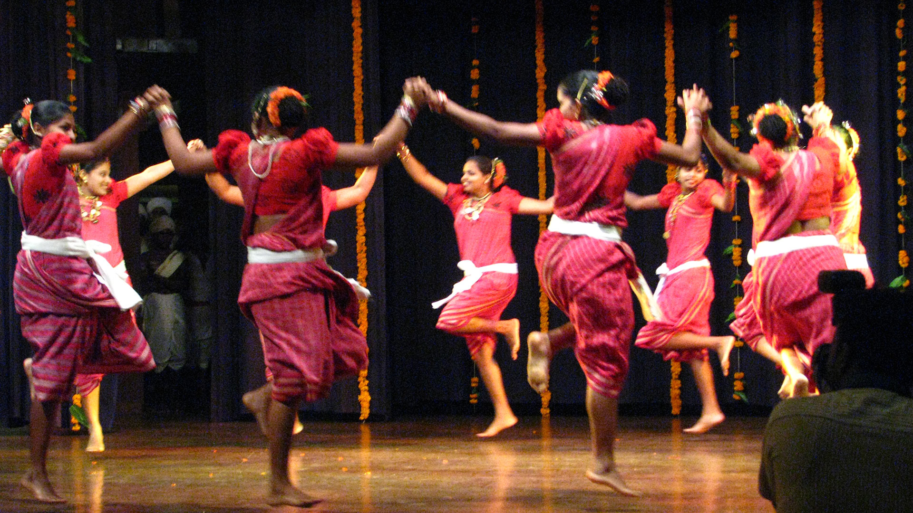

Women perform Dhalo dance to ask God to protect their family and household. The dance performance is a kind of ritual which women do to offer their prayers to the deity.
Dhalo is performed at the beginning of winters, during the Pausha period according to the Hindu calendar. The dance is performed for five to nine days depending upon when the full moon will be to end the festival. The theme of Dhalo dance is mainly religious and social.
Dhalo dance is a blend of rituals and art which grabs everyone’s attention. Dhalo is performed in a sacred place which is called “mand”, people are not allowed to enter with footwear. The festival starts on the full moon day also knows as “Dalyachi Poonav” locally.
The songs sung while performing the Dhalo dance are either in Konkani language or in the Marathi language. The songs are dedicated to nature. They talk about mother earth and fauna flora. These songs also include everyday life stories while presenting the love for nature by people.
At the end of the festival, a short play/performance called ‘Rambha’ is done. In this narrative, twenty-one Rambha sisters want to meet their one and only brother. The sisters’ age from fourteen to sixty-five years.
They all go on the terrace and call out to their brother. Upon their calling the brother appears on the terrace and they all meet him. This is the only male character part in the Dhalo dance form. Other than this no man can participate. The male character is known as “Bandhav”.
The performance starts with the chief woman of the group saluting mother earth and asking her to bless their dance and rituals of the festival. She asks mother nature to protect their village from any harm and the completion of the festival without any bad omen.
Twelve to fourteen women take part in the performance. They dance in two rows with interlocked hands. Women bow down together with interlocked hands during the dance performance. The movements are slow and smooth but also show the excitement of women as they dance. Each row bows down after the other row. The dance ends with women drawing men’s sketches as a part of the ritual.
On the last day of the performance, the dance ends with sprinkling water on “mand” known as “mand shimpane”.